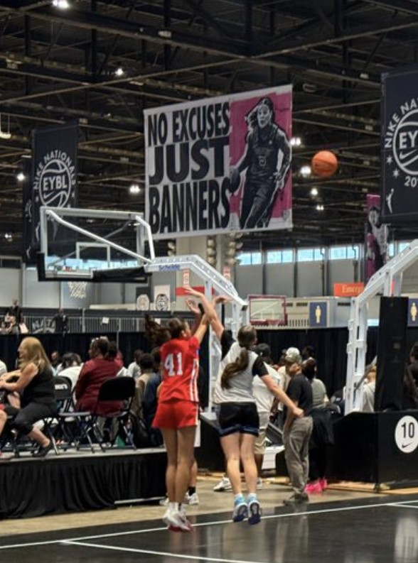
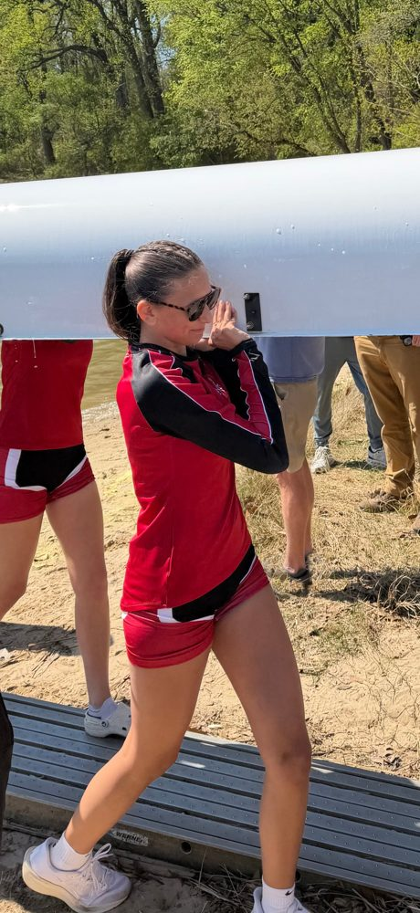
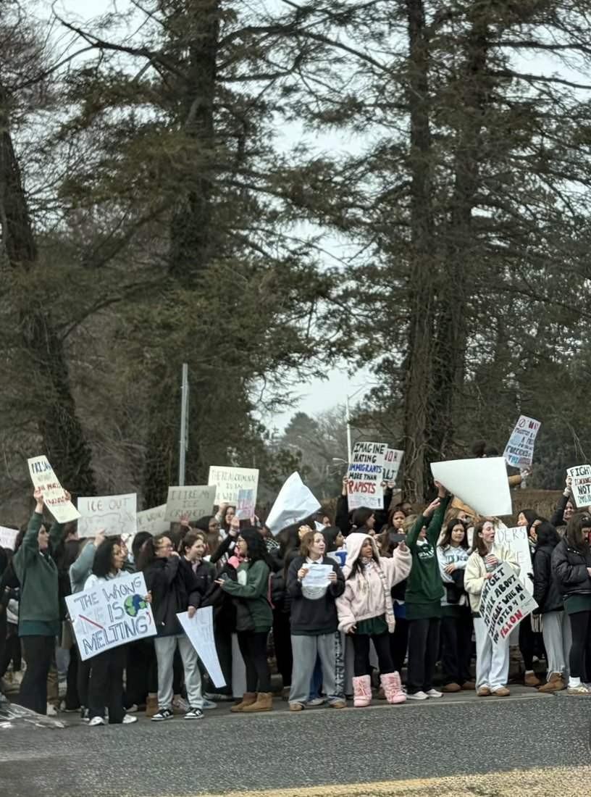
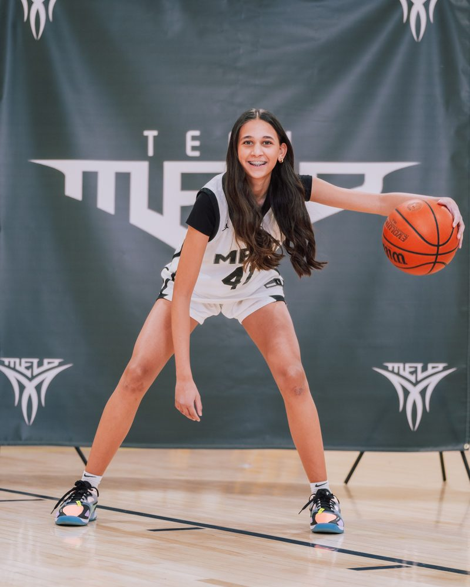
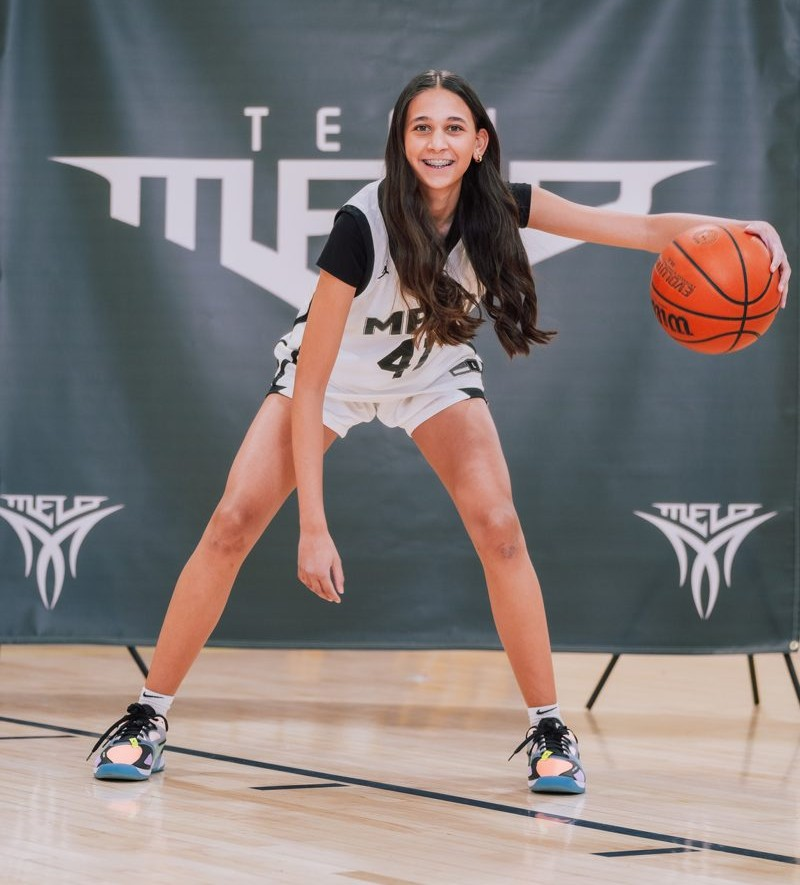
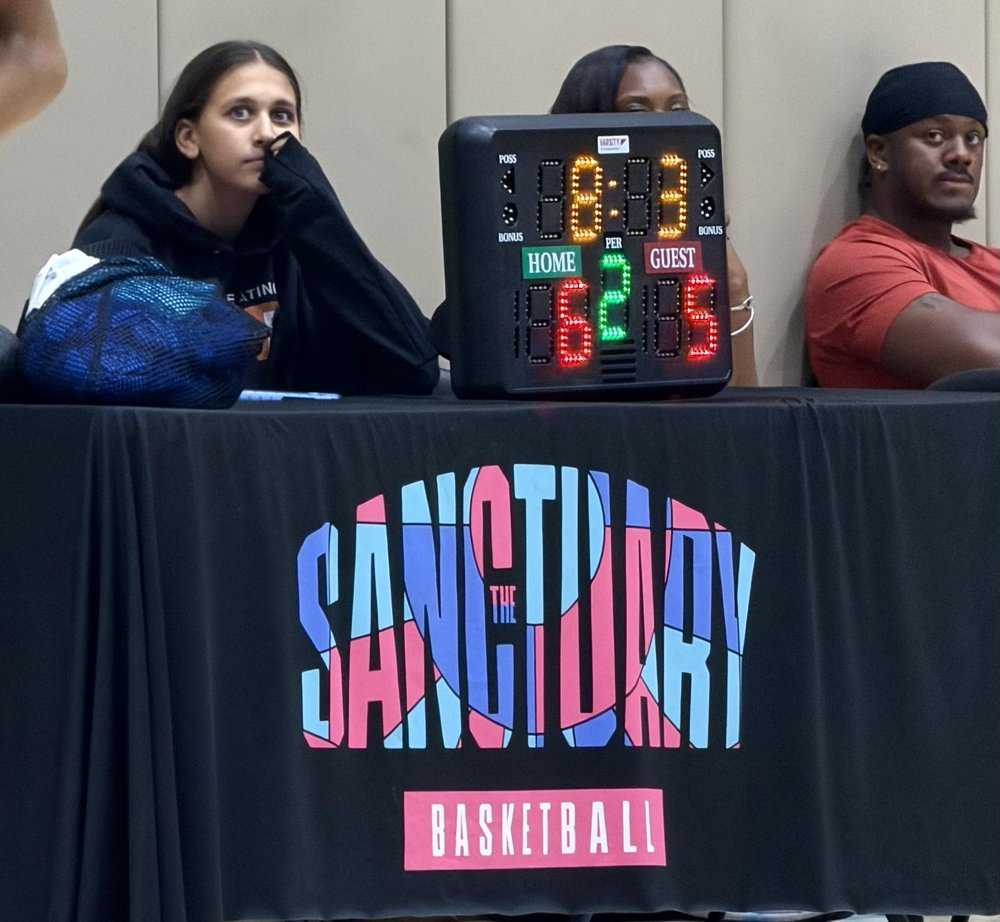

Competing on the court. Focused in the classroom. Walking with those working towards something better.




I've spent this past summer volunteering both with Global Refuge and The Sanctuary, working to impact families navigating systems that weren't initially built for them.
This work matters to me deeply and shapes how I want to help define the future. Both organizations are about showing up, even when it's hard, and doing the unglamorous parts well alongside the parts that get mentioned in the news.
Read the full storyCompetitive basketball player on the EYCL Circuit with Team Melo, with a growing interest in rowing through school and Baltimore Community Rowing.

Summer internship supporting resettlement work with immigrant and refugee families arriving in Baltimore.
Assisting elementary and middle school age kids in Baltimore, through The Sanctuary Collective, a Baltimore nonprofit that uses basketball to open the door to academic and life support.

Grade 10 at Roland Park Country School, with a growing interest in International Affairs and Politics.